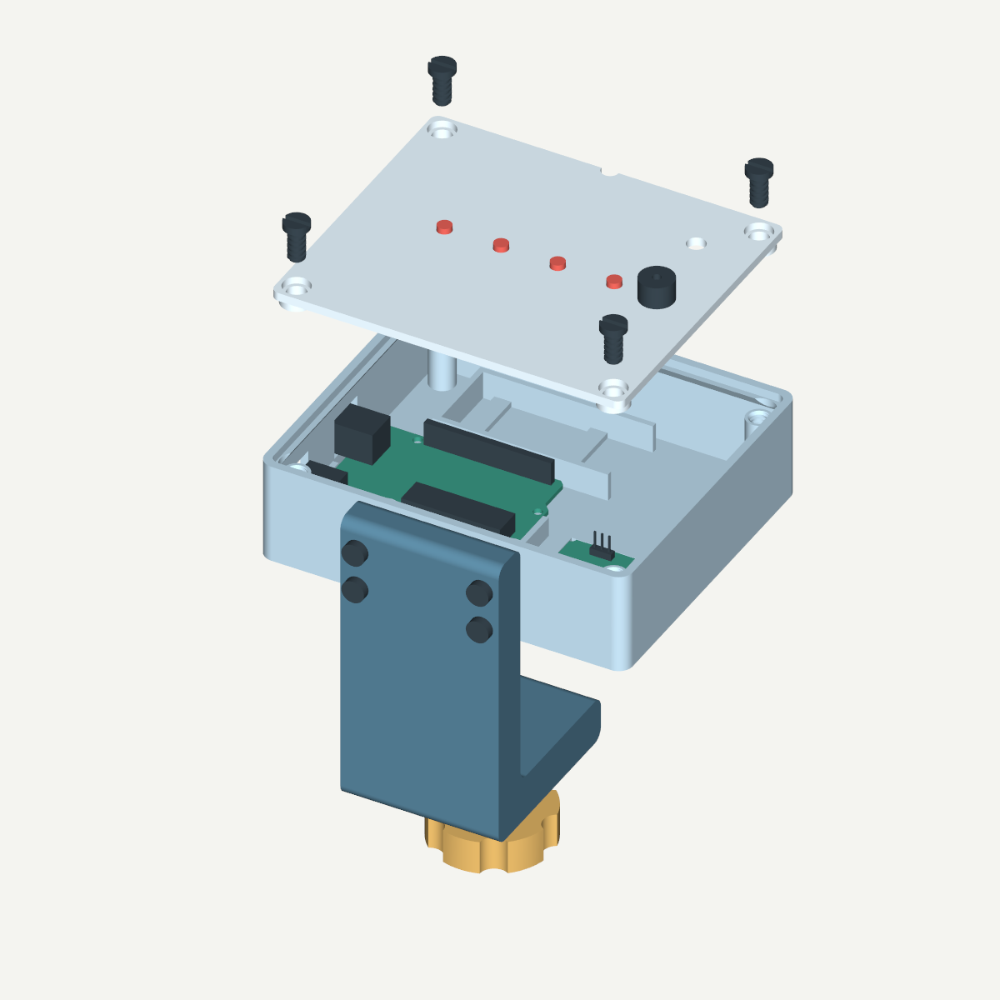

Загрузите программу
Один раз запишите TableMotionV2.ino на Arduino Uno через Arduino IDE. После загрузки отсоедините кабель от компьютера.
Скачать программу ↓Свет и звук при толчках и вибрации. Компактное устройство на Arduino, которое закрепляется на краю столешницы.
⊕ Нажмите на метку или компонент, чтобы посмотреть его назначение и крепление.

Прибор регистрирует ускорение, а не силу касания или перемещение в миллиметрах. Очень медленное движение может не обнаруживаться. Чувствительность настраивается на конкретном столе.
Подготовьте электронику и напечатайте восемь деталей из пяти файлов.
Провода, монтажная плата для транзисторного ключа, термоусадка, отвёртка, паяльник, мультиметр и клей.
Питание — от внешнего USB-пауэрбанка 5 В. Подключите его к разъёму USB-B на Arduino. Проверьте заранее, что пауэрбанк остаётся включённым во время ожидания.
| Деталь / файл | Количество | Положение |
|---|
Напечатайте детали 01–04 по одной и четыре болта 06.
В слайсере проверьте поддержки у окон разъёмов и горизонтального резьбового отверстия. Зазоры требуют откалиброванного принтера.
После печати снимите заусенцы. Винты должны вкручиваться от руки. Не затягивайте тугую резьбу силой.
Сначала примерка и проверка электроники. Затем фиксация плат и окончательная сборка.
Соединяйте компоненты при отключённом питании.
Пищалка подключается к 5 В через транзисторный ключ. Все точки GND соедините с GND Arduino.
| Arduino / питание | Куда подключить |
|---|---|
| AMP-B041 | 5V → V, GND → G, A4 → D (SDA), A5 → C (SCL). |
| Светодиоды | D3–D6: каждый вывод через свой резистор 330 Ом к аноду; катоды → GND. |
| Ключ пищалки | D9 → 1 кОм → база NPN; база → 10 кОм → GND. Эмиттер → GND. Коллектор → минус пищалки; плюс → 5V. Проверьте распиновку транзистора. |
| Диод | Параллельно пищалке: полоска к 5V, другой вывод к коллектору. |
Мультиметром проверьте полярность и отсутствие коротких замыканий. Изолируйте каждый оголённый вывод и место пайки термоусадкой.
Используйте модуль AMP-B041 и активную пищалку на 5 В с потреблением до 30 мА.
Загрузите программу, проверьте свет и звук. Окончательно закрепите платы после успешной проверки.
Один раз запишите TableMotionV2.ino на Arduino Uno через Arduino IDE. После загрузки отсоедините кабель от компьютера.
Скачать программу ↓Питание — от внешнего USB-пауэрбанка 5 В. Подключите его к разъёму USB-B на Arduino. Проверьте заранее, что пауэрбанк остаётся включённым во время ожидания. Оставьте стол неподвижным примерно на пять секунд: датчик измерит фон автоматически.
Слегка толкните стол. Четыре светодиода должны загореться на 2,5 секунды, а пищалка — подать два сигнала.
Закрепите датчик и корпус без люфта. После сборки повторите проверку на рабочем столе.
Понаблюдайте за столом в покое, затем сделайте несколько слабых касаний в разных точках. Для повторной калибровки выключите и включите питание, не касаясь стола.
Команды монитора порта Arduino IDE, 115200 бод:
Поправка к порогу сохраняется после отключения питания. После события устройство не регистрирует новое движение 1,15 с.
Проверьте питание датчика, соединения V/G/D/C и сообщение в мониторе порта. После исправления отправьте r или перезапустите устройство.
Проверьте фиксацию датчика. Не двигайте стол, отправьте r и дождитесь READY.
Сначала устраните люфт струбцины и датчика. При ложных срабатываниях увеличьте порог командой +. Если нужные касания пропускаются, уменьшите порог командой -.
Проверьте полярность активной пищалки, соединения транзистора и наличие питания 5 В.
Проверьте кабель и режим работы пауэрбанка при малой нагрузке.
Уберите провода из-под края, проверьте заусенцы и резьбу. Не дотягивайте силой.
Модели для печати и редактирования, программа Arduino и иллюстрированная инструкция.
STL · STEP
Геометрия проверена в CAD, программа компилируется для Arduino Uno. Перед использованием проверьте посадку реальных компонентов, качество печати и чувствительность собранного устройства.